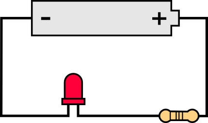
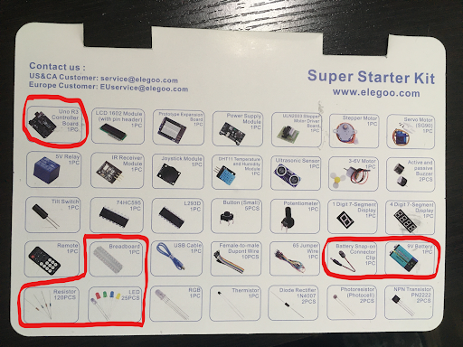
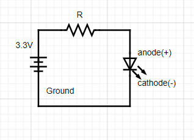
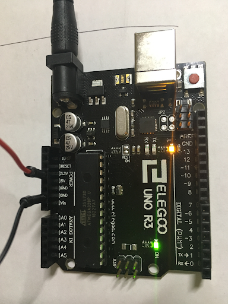

Getting Started: Simple LED Circuit

About this Project
For this project you will be tasked with constructing a circuit that delivers power to an LED, making it light up. When you have completed it you must show it to an officer and they will ask you some questions about it.
Lecture Slides
Prerequisites
- N/A
Skills Learned
- Voltage, Current, Resistance in a Circuit
- Using Ohm’s Law
- Converting a Schematic to a Circuit
- Using Data Sheets
Parts List
- Microcontroller Board
- Breadboard
- Jumper Wires
- 9V Battery
- Battery Snap-on Connector
- Resistor (you must calculate the resistance)
- LED

Project Specification
Schematic
Use the following schematic for reference when constructing your circuit. Be aware that the orientation of the LED is important when entering it into your circuit on your breadboard. For the LEDs in your kits the cathode(-) should have a shorter lead and flat edge, whereas the anode(+) has a longer lead and rounded base.

Checkpoint 1: Choose Your Resistor
In order to determine the resistance needed for your circuit you must first determine the LED’s forward voltage and forward current. Please refer to the following datasheets depending on what color LED you use. Please use the value under ‘Typ’ as this is the typical value for the component. You then must apply Ohm’s Law to determine the proper resistance to create the forward voltage.
- White LED: datasheet
- Green LED: datasheet
- Blue LED: datasheet
- Yellow LED: datasheet
- Red LED: datasheet
Setting up your Power Source
NOTE: Please read through this section and the common mistakes section completely before starting to avoid harming your Arduino.

- Connect your battery to the snap-on adapter, then plug it into your Arduino. The onboard LEDs should light up to indicate your Arduino is powered. (You can also power your Arduino by connecting it to your PC via USB if your battery dies)
- When powered, your Arduino has a built-in 3.3V and 5V power source, for this we project we will just use the 3.3V source.
- Orientate your Arduino so that the power port is the top edge, on the left edge you should see a set of Power pins, connect a wire to the 3.3V pin and a different wire to one of the Ground (GND) pins.
- Connect the 3.3V wire to one of the holes on your breadboards positive (+) rail. Connect the ground wire to one of the holes on the negative (-) rail.
- Now you can build your circuit on the breadboard. Treat the positive rail as the positive end of the battery and ground as the negative end of the battery. Make sure there is always a resistor in your circuit, otherwise your power source will be short circuited causing problems/breaking your Arduino.
Helpful Tips/Common Mistakes
- The rows on the breadboard are shorted, don’t connect both leads from a component into the same row.
- Construct your LED circuit before plugging in your battery.
- If your calculated resistance is a value you don’t have it’s safer to round up instead of rounding down.
- If you are unsure about your circuit, ask an officer before plugging it in
- Double check your LED is oriented the correct way.
- Unlike the LED, the resistor doesn’t have a specific orientation.
- Always make sure there is a resistor in your circuit to avoid breaking your Arduino/LED